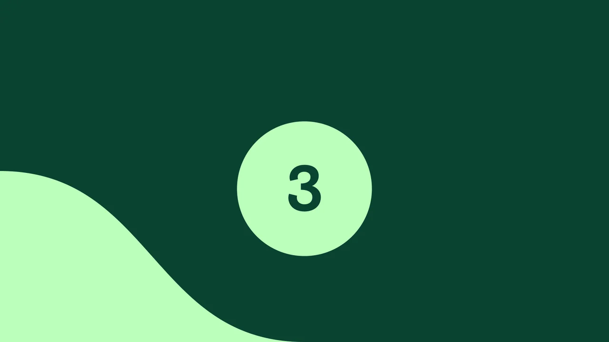
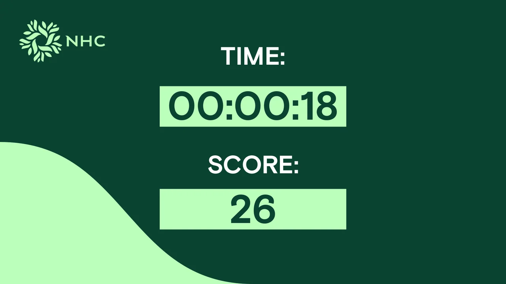
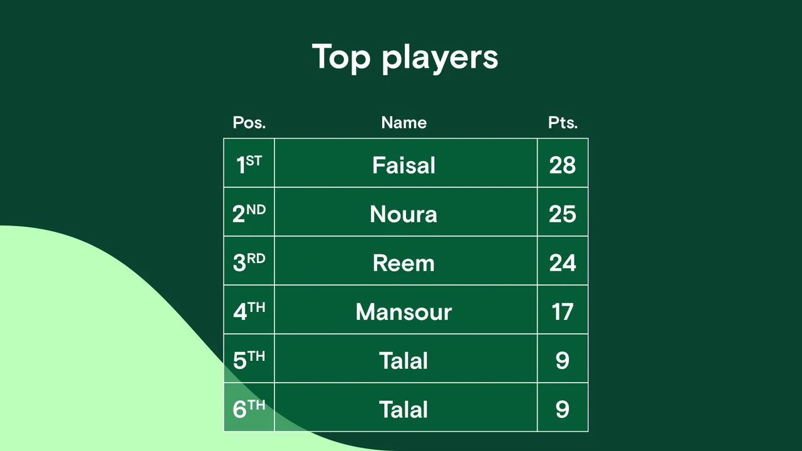

Enter through one cue
A large ball graphic introduces the repeated action before the countdown begins.
A repeated action becomes a readable round.
Explore the story
Turn one simple input into a complete timed-game interface sequence.
A ball cue introduces play before countdown, timer and score screens. Empty name entry and a final score complete the sequence described in the kiosk source.
A large ball graphic introduces the repeated action before the countdown begins.
Timer and score readouts remain prominent during the active game state.
An empty name field and leaderboard layout carry the round into its closing screens.
Explore the complete compositions and interface states. Select any image for a closer look.
08 / PROJECT IMAGES
Select a view to explore.
The standby screen connects a physical ball input with the on-screen round.
The first countdown beat gives the player time to prepare.

The centered count continues against the same green visual system.
The final countdown readies the timed round.
The launch cue opens the reaction challenge.
Large time and score fields prioritize the two values that matter during play. The displayed values are source examples.

The result screen pairs an empty name field with the sample final score.
A ranked table closes the loop. Names and scores are static values supplied in the native design.

Structure, interaction and visual decisions that give the work its character.
RoleConfirm interaction design, interface artwork, game logic, Windows packaging and physical-control integration separately.
AssetsThe branded source and ball artwork require ownership and contribution confirmation. Logo removal creates a neutral private derivative; it does not establish sole authorship or public-use permission. Sample scores are UI content, not impact metrics.
StatusPrivate case-study draft supported by interface artboards and selected implementation review; hardware, runtime and delivery unverified.